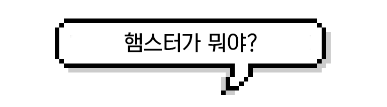
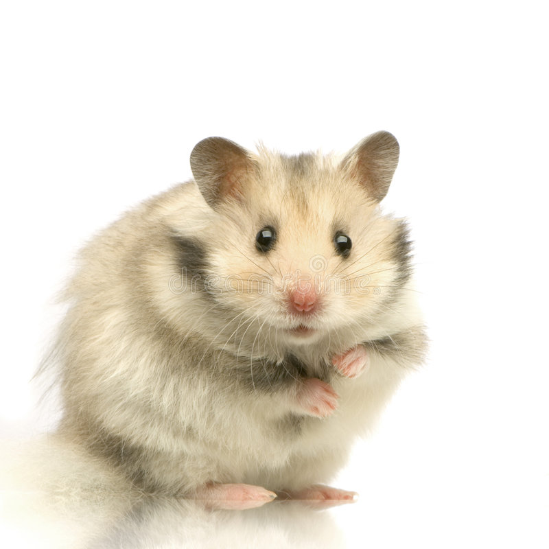
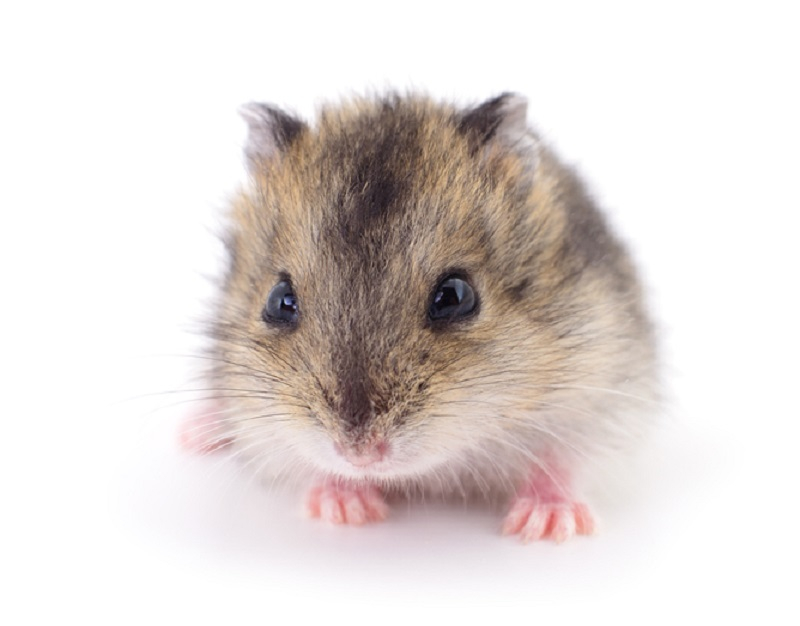
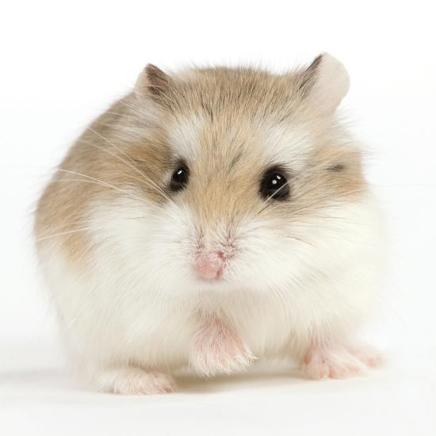

햄스터를 결정했다면...
지구를 정복할 햄스터를 자세히 알아보자!

< 개요 >
주로 애완용으로 기르는 설치류 쥐과 동물. 쥐목 비단털쥐과 비단털쥐아과에 속한 포유류를 말한다.독일에서 한 사람이 햄스터가 굴을 파 먹이를 저장하는 것을 보고,
독일어 단어 중 Hamstern ("음식물을 사재기하다, 매점매석하다."라는 뜻)를 이용해 햄스터라고 이름을 붙여줬다.
< 햄스터의 종류 >
 1. 시리아 햄스터 (골든 햄스터)
(Syrian hamster)
설치목 비단털쥐과 비단털쥐아과 시리아햄스터속(Mesocricetus)의 생물을 말한다.
실험용으로 많이 사육하다 현재는 애완용으로 많이 사육한다.
시리아햄스터의 몸길이는 13~18cm로 드워프햄스터보다 크다.
수명은 2~3년 정도다.
모종
영상

2. 정글리안 햄스터 (드워프 햄스터)
(Winter white hamster)
설치목 비단털쥐과 비단털쥐아과 드워프햄스터속(Phodopus)의 생물을 말한다.
정글리안햄스터는 1773년에 중국 북서부 준가얼(중가리아) 분지에서 처음 발견되었다.
몸길이는 7~9cm이며, 꼬리는 5mm 정도로 꼭 면봉 머리처럼 생겼다.
체중은 계절마다 변하는데, 보통 수컷은 19~45g, 암컷은 19~36g 정도다.
털색은 여름에는 보통 갈색이 섞인 회색이며, 겨울에는 흰색으로 털갈이를 한다.
모종
영상

3. 로보로브스키 햄스터
(Roborovski hamster)
로보로브스키라는 이름은 발견자인 로보로브스키의 이름에서 따왔다. 사막햄스터 또는 사슴햄스터라고도 불린다.
크기는 4.5~5cm로 햄스터 중 가장 작으며 몸무게는 20~25g 정도이다.
수명은 약 2-4년. 핸들링이 거의 안되다 보니 스트레스를 덜 받아서 그런지 상당히 오래 산다.
낯가림이 몹시 심하기 때문에 "로보로브스키를 길들이느니 애완용 사마귀를 길들이겠다"고 할 정도로 길들이기가 어렵다.
사람을 공격하는 일은 별로 없지만 겁이 많아 흔히 관상용으로 여겨지며, 한국에서는
모종
영상